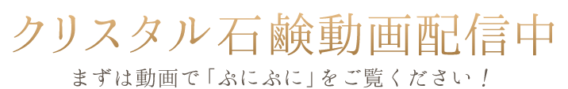

クリスタル石鹸のご紹介
ぷにぷにクリスタル石鹸

クリスタル石鹸の取り出し方
クリスタル石鹸ＣＭ

クリスタル石鹸 1個
送料別全国500円(税別)、クリスタル石鹸2個以上で送料無料！
¥2,300 (税別)
(税込価格：¥2,530)
商品名：クリスタル石鹸
内容量：100g 【洗顔料】
成分：水、グリセリン、ココイルグリシンK、タマリンドガム、ペンチレングリコール、エミュー油、水溶性プロテオグリカン、ヒアルロン酸Na、BG、エチドロン酸4Na、ラウリン酸ポリグリセリルー10、グルコース
発売元：株式会社ユーコネクト 製造販売元：スターデザイン株式会社
■ご使用方法
トレイ上側の穴より楊枝でつき、ゴム風船の袋から中身を取り出してください。
水で濡らしてよく泡立ててから洗ってください。
■使用上・保管上の注意
○目に入った場合は直ちに洗い流してください。○お肌に異常があるとき、合わないときはご利用にならないでください。○乳幼児の手の届くところには絶対に保管しないでください。○使用後は水をきって置いてください。水に浸したままだと溶けてしまう場合があります。○商品の特性上若干の離水が見られることがあります。○風船の開封は穴から付属の楊枝を用いて開封してください。○冬季など温度の低い状態で石鹸成分の結晶が析出する場合がございますが製品に異常はございません。

クリスタル石鹸 定期便
オリジナル泡立てネット付き！ ¥2,300 (税別) 送料無料！
(税込価格：¥2,530)

クリスタル石鹸
2個以上で送料無料！
2個の場合¥4,600 (税別)
(税込価格：¥5,060)

クリスタル石鹸
+エミューの雫 72ml
¥4,100 (税別) 送料無料！
(税込価格：¥4,510)

クリスタル石鹸
+エミューの雫 72ml
¥8,800 (税別) 送料無料！
(税込価格：¥9,680)

クリスタル石鹸
+オリジナル泡立てネット
クリスタル石鹸2個以上で送料無料！
¥2,600 (税別)
(税込価格：¥2,860)

オリジナル泡立てネット
石鹸を持てるふんわり傘タイプ
※クレジットカード決済のみ対応
¥300 (税別) 送料無料！
(税込価格：¥330)
エミューの雫 ギフトボックス
大切な方へ記念日のプレゼントに
※さらに包装する場合は左ボタンから
¥4,400 (税別) 送料無料！
(税込価格：¥4,840)
エミューの雫15ml+クリスタル石鹸+オリジナル泡立てネットのギフトセットです。
製品についてのリーフレットも
一緒にお入れします。
※ギフトボックスに包装が必要な場合、別途300円(税別)で包装可能です。
ご希望の方は下記ボタンよりご注文ください。
一部商品を除き、全国送料無料、代引き手数料無料でお届けします。
「クリスタル石鹸」1個の場合は全国一律送料500円(税別)、その他商品は送料無料です。（当店が負担いたします。）
「クリスタル石鹸」2個以上や「オリジナル泡立てネット」を除くその他商品と同梱した場合は送料無料です。
代金引換
代引き手数料無料です。（当店が負担いたします。）
※到着時にクレジットカードでもお支払い可能な代金引換サービス(e-コレクト)のご利用を希望される方は、ご注文時、備考欄に「佐川急便での配達希望」の旨をご記入ください。
クレジットカード決済
インターネットのご注文、またお電話でのご注文でもクレジットカード決済可能です。
ＳＳＬを利用しておりますので、カード番号は暗号化されて送信されます。どうぞ、安心してご利用ください。
VISA、MasterCard、JCB、AMEX、Diners Clubマークのついたクレジットカードがご利用いただけます。

平日12時までに完了したご注文は当日に出荷いたします。
平日月曜～金曜の12時までに承ったご注文は、原則当日発送いたします。土日祝日はお休みをいただいております。
【地方毎の到着目安】
●北海道は２～３日
●東北・北陸・信越・東海地方は２日
●関東・関西・中国地方は１～２日
●四国は２日
●九州は１日
●沖縄は１～２日
※一部地域、離島にお届けの場合や、配送時の天候・交通状況で、若干お時間をいただく場合もございますのでご了承ください。
運送会社は、一部地域を除き日本郵便を利用してお送りいたします。
運送会社は基本的に、北海道は佐川急便、その他のご地域は日本郵便を利用してお送りいたします。また、天候や物流増加などの配送状況により、運送会社を変更してお送りさせていただく場合がございます。
到着日や配送時間のご指定も承っております。

商品の発送には万全を期しておりますが、万が一パッケージに破損や汚れなどがあった場合や、到着した商品がご注文商品と異なる場合は、商品到着日より１週間以内にご連絡をお願い致します。返品・交換にかかる費用は全て当店負担で対応いたします。
お受け取り後のキャンセルなど、お客様ご都合の返品・交換の場合は、恐れ入りますがお客様負担となります。返品・交換の手配をご連絡いたしますので、未開封のまま、大切に保管をお願い致します。
※当店では商品の特性上、一度開封されました商品につきましては、返品・交換をお断りしております。何卒ご了承願います。